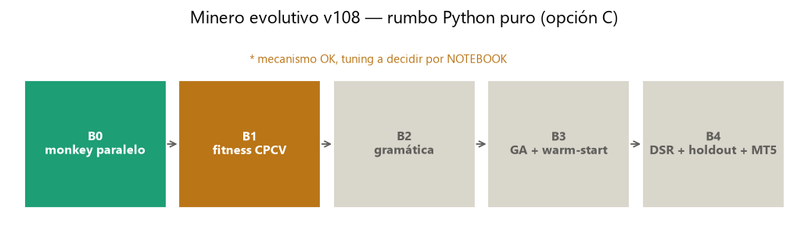
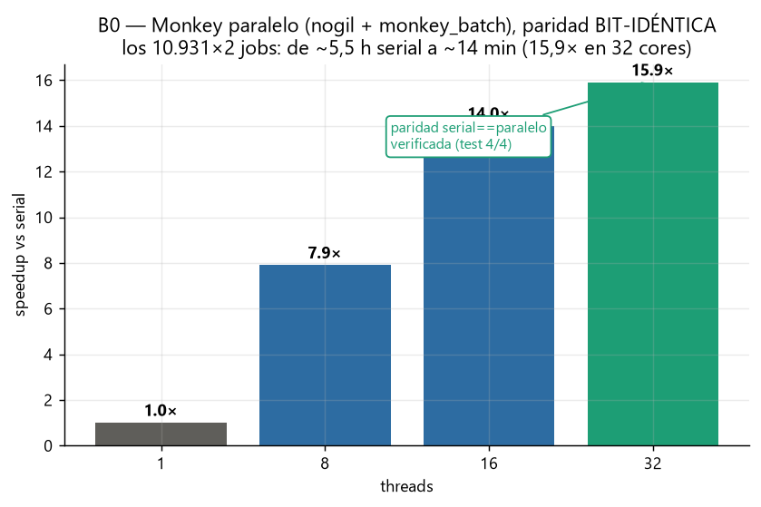
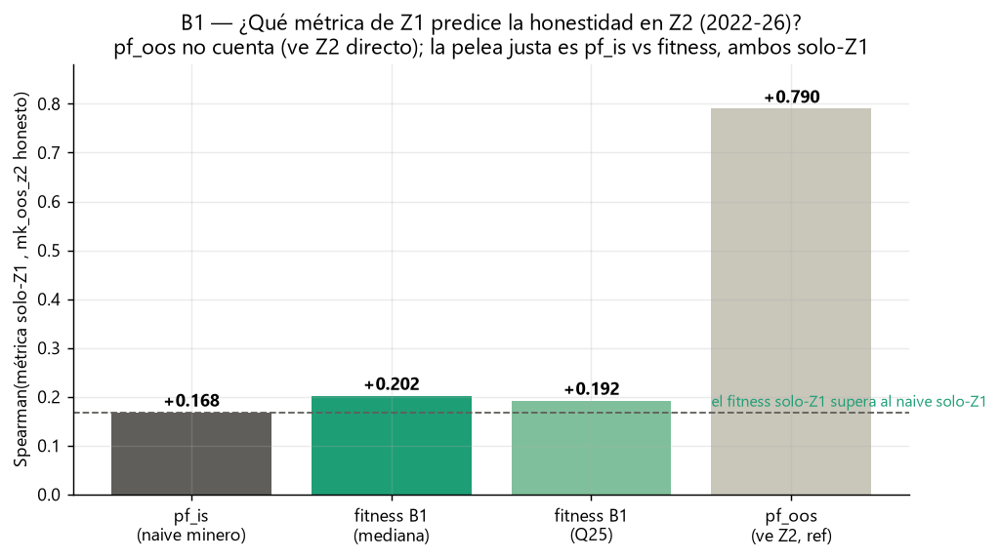
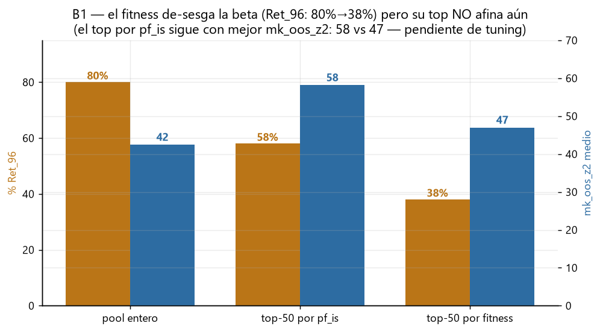
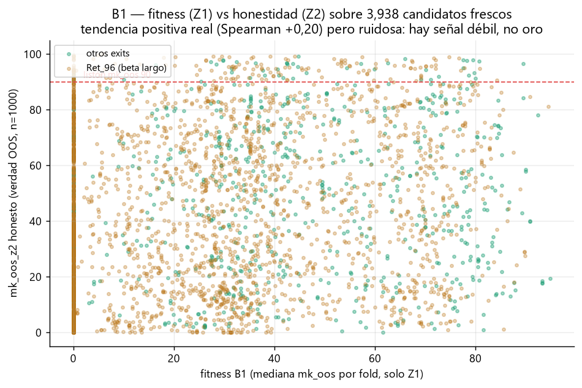

Estado actual (2026-06-15)
Rumbo: minero evolutivo v108 (Python puro, opción C). El tribunal (motor MT5-calibrado, monkey,
gates) está validado; el cuello es el GENERADOR de hipótesis. Se construye el minero en 5 bloques.
B0 (monkey paralelo) cerrado · B1 (fitness) construido, mecanismo OK, tuning a decidir.
Bloques del minero v108

mapaLos 5 bloques: B0 monkey paralelo (hecho) · B1
fitness CPCV (mecanismo hecho, tuning pendiente) · B2 gramática formulaica · B3 GA + warm-start
· B4 selección DSR + holdout Z2 + reality check MT5.
Gráficos de los avances

B0Monkey paralelo con paridad bit-idéntica. Con
nogil
+ monkey_batch el monkey escala a 15,9× en 32 cores y da resultados IDÉNTICOS al serial (test 4/4).
Los 10.931×2 jobs que tardaban ~5,5 h pasan a ~14 min. Esto desbloquea el fitness B1 (que llama al monkey
muchísimas veces).
B1¿Qué métrica de Z1 predice la honestidad en Z2? La pregunta
honesta es out-of-sample: usando SOLO Z1 (2015-21), ¿quién anticipa que un candidato será honesto en Z2
(2022-26)? El fitness B1 (+0,202) le gana al pf_is naive (+0,168) — la mejora pedida. (pf_oos
+0,79 no cuenta: mira Z2 directo, está de referencia.)

B1El fitness de-sesga la beta, pero su top no afina aún. El
horizonte beta (Ret_96) baja de 80% del pool a 38% en el top por fitness — bien. PERO el top-50 por fitness
tiene peor honestidad media en Z2 (47) que el top-50 por pf_is (58): con n=400/mediana ordena mejor "en lo
grueso" pero no afina el extremo. Ahí está la decisión de tuning.

B1La nube completa: hay señal débil, no oro. Cada punto es un
candidato: fitness en Z1 (eje x) vs honestidad real en Z2 (eje y). La tendencia sube (Spearman +0,20) pero
es ruidosa. Hallazgo importante: en el terreno fresco/limpio/largo la transferencia Z1→Z2 es débil
pero REAL — el "anti-edge absoluto" de antes era en parte artefacto de la data vieja.
❓ Preguntas abiertas para NOTEBOOK
(Mariano las contesta desde la notebook. También quedan en BITACORA.md.)
P1 — Tuning del fitness B1 antes de cablearlo al GA (B3). El mecanismo está probado
(skill→100, beta→0) y bate al naive en lo grueso (+0,20 vs +0,17), pero su top-50 no supera al de pf_is (mk_z2
47 vs 58). Knobs disponibles: (a) n_monkeys 400→800/1000 (baja la varianza por fold); (b)
agregación mediana vs Q25 (Q25 afinó: top 52 y 5/50 pasan ≥90 vs 47 y 2/50); (c) la regla
n_valid<K/2 ⇒ fitness 0 (¿muy dura?); (d) λ de parsimonia. ¿Corro un barrido
(n∈{400,1000}×{mediana,Q25}) y te traigo la tabla, o fijás vos la config?P2 — El diagnóstico cambió en terreno fresco. Con la data Dukascopy nueva (Z2 2022-26,
historia 2003+), pf_is muestra +0,168 de transferencia Z1→Z2 real, no el ~0/negativo del diagnóstico
viejo. ¿Esto reabre algo del rumbo (p.ej. vale la pena exprimir la gramática vieja un poco más), o seguimos
firmes con B2 (gramática formulaica) como estaba?
P3 — Objetivo del fitness: ¿robustez o pico? El fitness actual premia consistencia en Z1
(mediana de folds), lo que sacrifica algo de pico. ¿La brújula del GA debe priorizar candidatos robustos-pero-
modestos, o picos-altos-aunque-menos-consistentes? Define qué optimiza B3.
Cómo se actualiza:
python tools/graficar_desarrollo.py regenera los PNG
desde los datos reales (CSV de validación, benchmarks). Cada bloque nuevo agrega su gráfico acá y su entrada en
BITACORA.md. Se abre servido en localhost (ver .claude/launch.json).